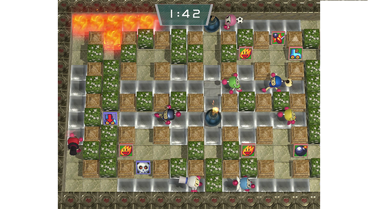
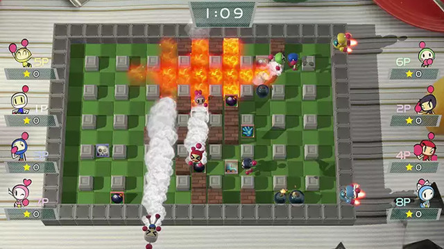
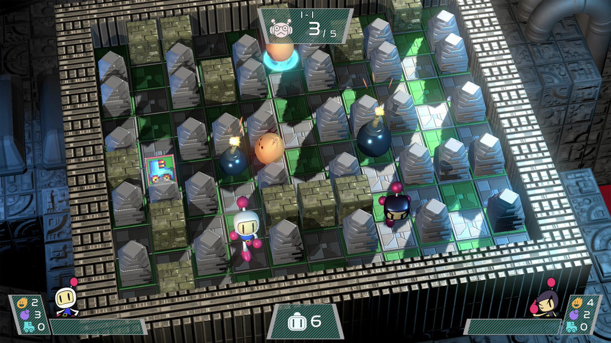

Shicheng Chu and Yifei Zhao Proposal
Shicheng Chu and Yifei Zhao's Proposal-- Super Bomberman
Summary
We will create a game looks like super bomberman. In this game, we will create a simple maze and simple AI for enemies. Also, after the bomb explodes, it will leave some special effect like flame.
Example Images

Explosion will leave flame at ground.

The game also have some special effect like flame and smog. The flame will kill player and enemies, also it can destory some walls.

The game will have a simple maze.
Techniques and Algorithms for Main feature
- Simple AI of enemy: pathfinding algorithm-- To move toward player and attack player
- Effect for flame and smog: particle motion
- Collision detection and handling for 3D objects
How we split the jobs:
Shicheng Chu:
- Basic scenes build up.
- Implementation for controller.
- Particle animation for flame and smog.
- Implementation for some incoming interesting ideas (not necessary).
- Testing Yifei Zhao's work.
Yifei Zhao:
- Collision detection and handling.
- AI for enemies.
- Refactoring to make the code be more efficient.
- Implementation for some incoming interesting ideas (not necessary).
- Testing Shicheng Chu's work.
Timeline
- April 6 - Project Proposal Submission
- April 10 - Basic scenes is built up.
- April 13 - Particle animation, Controller for player and AI for enemies are funtional as we expected.
- April 17 - Collision detection and handling are functional as we expected.
- April 17 - April 24 - Based on the completeness of our project's main feature, we will talk with professor to decide our presentation date.
- The date of presentation - April 30 - Based on the reviews from our presentation, we will keep improving our project. If we still have time, we will implement some intereting but not necessary ideas such as start menu, game scenes transtition and etc.
- May 1 - Final project Submission.